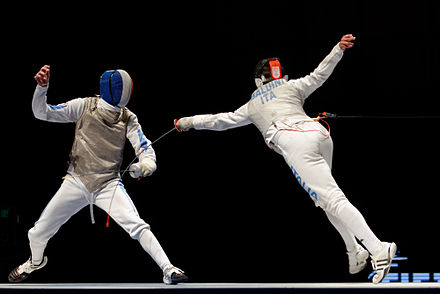
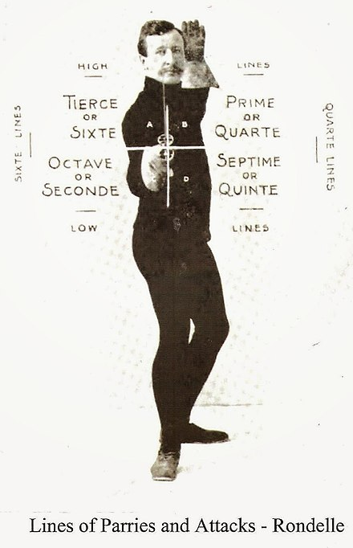

El concepto de "parry" o "parada" proviene del deporte conocido como "esgrima". Para ejecutar
una parada, los esgrimistas golpean la debilidad del oponente , o el área cerca de la punta de la hoja
de la hoja, con su fuerte , o la parte de la hoja cerca de la campana (o mango) del arma. Esto desvía
la espada del oponente lejos de ellos, protegiéndolos y colocándolos en una buena posición para contraatacar.
Las aproximaciones de las paradas precisas se hacen a menudo durante los combates, pero generalmente son lo
suficientemente precisas como para clasificarse como paradas.
En espada , debido a la ausencia de reglas de prioridad, una parada puede clasificarse
como cualquier desviación de la hoja que evita que el ataque del oponente caiga.
La función principal de una parada es evitar que el ataque de un oponente aterrice. Durante un combate, las
paradas se inician desde la posición "en garde" (neutral), cuando el ataque de un oponente se considera amenazante.
Una parada suele ir seguida de una respuesta o "riposte" , que es un ataque contra el atacante original. Los esgrimistas más
avanzados pueden, en lugar de responder inmediatamente después de realizar una parada con éxito, iniciar un premio
de fer ("tomar la espada") en el que mueven la espada del oponente a una posición diferente y luego lo golpean.
Una parada suele ir seguida de una respuesta o "riposte", que es un ataque contra el atacante original. Los esgrimistas más
avanzados pueden, en lugar de responder inmediatamente después de realizar una parada con éxito, iniciar un premio
de fer ("tomar la espada") en el que mueven la espada del oponente a una posición diferente y luego lo golpean.


El "parry" en la saga SoulsBorne:
El "parry" es una mecánica que ha sufrido numerosos cambios a lo largo de los diferentes juegos de la compañía
FromSoftware
, la cual se ha convertido en un hito en la historia del desarrolle de videojuegos e inventando un nuevo género
de videojuegos en el transcurso de la década de 2010. En cada uno de estos títulos la mecánica varía pero se mantiene
de uno a otro como una parte importante del "gameplay".
Demon's Souls:
En el videojuego Demon's Souls de 2009 podemos ver un primer boceto de dicha mecánica. Si hay algo que decir de ella es
que era difícil de usar y requería de un equipamiento específico para ser utilizada. Por ejemplo, si el jugador llevaba
una espada recta en la mano derecha (como suele ser casi-mandatorio en estos juegos) y equipamiento compatible con la
mecánica (una espada curva, un escudo medio, una daga, un estoque o nada en la mano incluso), al pulsar el trigger
izquierdo (botón L2) del mando de la PS3 realizaba la acción de parry.
Cuando la acción de "parry" era realizada durante el momento de impacto de un ataque enemigo "parryleable" ocurría lo siguiente:
Se inicia la acción, los primeros "frames" de la animación se consideran inactivos.
Pasados unos "frames" se inicia el período de la animación donde los "frames" son activos.
Los "frames" finales vuelven a ser inactivos.
En caso de que el impacto se produzca durante los "frames" activos, el enemigo quedará desprotegido.
Mientras esté desprotegido, el jugador puede ejecutar un "riposte" con el arma de su mano derecha
En el videojuego Dark Souls de 2011, los cambios en la mecánica de "parry" son casi imperceptibles. Más allá de unas animaciones
más pulidas tanto para el "parry" como para el "riposte", la mecánica seguía siendo la misma. Y aunque incluyó las armas de puños
dentro del grupo de las armas compatibles siendo su funcionamiento el mismo que la mano desnuda. Dark Souls fue mucho más popular
que su predecesor y debido al incremento del número de jugadores la mecánica y su funcionamiento se hizo más conocida y empezó a
ser popular entre una serie de juegadores (como una prueba de habilidad) y odiada por el resto debido a que ciertos factores la
convertían en una acción "injusta".
El proceso es el mismo que en el videojuego anterior:
Se inicia la acción, los primeros "frames" de la animación se consideran inactivos.
Pasados unos "frames" se inicia el período de la animación donde los "frames" son activos.
Los "frames" finales vuelven a ser inactivos.
En caso de que el impacto se produzca durante los "frames" activos, el enemigo quedará desprotegido.
Mientras esté desprotegido, el jugador puede ejecutar un "riposte" con el arma de su mano derecha
Dark Souls II:
En este título, secuela del anterior, del 2014 la mecánica de "parry" mantiene las bases de anteriores
juegos pero se ve influenciada por un cambio en las mecánicas principales debido a la aparición de un nuevo
elemento. Este elemento es el "stat ADAPTABILIDAD" que es exclusivo de
esta entrega de la saga Soulsborne. Además, ahora cualquier arma puede ejecutar la acción de "parry", añadiendo
una variedad nunca vista a la mecánica, aunque la escasa capacidad de ciertas armas para realizar un "parry exitoso"
debido a que la "ventana de parry" era demasiado pequeña como para lograr su uso efectivo de forma consistente. Algo
para lo que el incremento de "frames activos" que aporta cada nivel en "ADAPTABILIDAD" sólo era una tirita tratando de
curar un hueso roto.
El proceso es el mismo que en el videojuego anterior:
Se inicia la acción, los primeros "frames" de la animación se consideran inactivos.
Pasados unos "frames" se inicia el período de la animación donde los "frames" son activos.
Los "frames" finales vuelven a ser inactivos.
En caso de que el impacto se produzca durante los "frames" activos, el enemigo quedará desprotegido.
Mientras esté desprotegido, el jugador puede ejecutar un "riposte" con el arma de su mano derecha.
Bloodborne:
En este juego de 2015, la mecánica de "parry" recibe una modificación casi completa con respecto a sus predecesores.
Muchas armas de las que vimos en los juegos anteriores han desaparecido y otras presentan nuevos atributos. Además,
aparecen las armas de fuego, las cuales serán la herramienta de "parry" de este título y sólo pueden equiparse en la
mano izquierda del personaje y su uso es a través del botón L2 (Trigger Izquierdo) del mando de PS4.
El proceso de "parry" es el siguiente:
Durante un ataque enemigo, se efectúa un disparo certero.
En caso de que el impacto se produzca en el momento que el impulso del atacante es más fuerte, el enemigo quedará desprotegido.
Mientras esté desprotegido, el jugador puede ejecutar un "riposte" (en este juego se le denomina Ataque Visceral) con su mano derecha.
Parry y Ataque Visceral.
Dark Souls III:
La entrega final de la saga Dark Souls salió en 2016 y supuso una vuelta a las mecánicas clásicas de combate y, sobre todo,
de "parry". En este título voy a extenderme un poco más debido a la amplia experiencia que poseo cuando se trata de los aspectos
mecánicos y técnicos. El funcionamiento es muy similar a las anteriores entregas de Dark Souls:
Se inicia la acción, los primeros "frames" de la animación se consideran inactivos.
Pasados unos "frames" se inicia el período de la animación donde los "frames" son activos.
Los "frames" finales vuelven a ser inactivos.
En caso de que el impacto se produzca durante los "frames" activos, el enemigo quedará desprotegido.
Mientras esté desprotegido, el jugador puede ejecutar un "riposte" con el arma de su mano derecha.
Pero en este título el funcionamiento del "parry" con los diferentes artilugios que permiten realizar esta acción
es diferente. Cada artilugio tiene sus propias animaciones y atributos
a la hora de realizar la acción. Además, en términos de como se siente realizar esta acción, éste es el título en el que más satisfactorio
resulta debido a las animaciones y efectos de sonido que el juego reproduce:
 Un "parry" en el momento justo.
Un "parry" en el momento justo.


Parry exitoso. < > < > < > < > < > < > Parry y riposte.
Parry y Ataque Visceral.